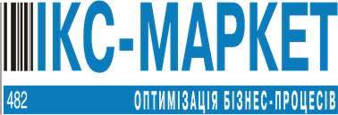
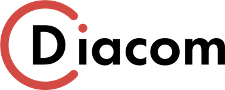

«TIMBER plus» (Гамбург, Германия)
Компания Business Software Solutions GmbH (BSS) – ведущий мировой
разработчик программного обеспечения в отрасли производства шпона с 2000 года.
TIMBERplus - это уникальная комплексная система для производства и продажи
шпона, начиная из отбора колод в лесном участке и заканчивая продажной шпона
конечному потребителю.
Системы бесконтактного измерения размеров пачек шпона на
производственных предприятиях, а также высокочеткое сканирование каждой пачки
от TIMBERplus сможет поднять уровень работы любого предприятия.
https://www.timberplus.com
«ИКС-Маркет» (Киев, Украина)

Компания «ИКС-Маркет» - ведущий системный интегратор, производитель и
поставщик электронного торгового оборудования на рынке Украины. Предлагает
клиентам полный комплекс услуг по автоматизации бизнес-процессов и внедрению
передовых технологий в сфере ритейла и логистики.
Принцип работы с клиентами основывается на комплексном подходе, который
предусматривает доброжелательность, своевременную поставку оборудования,
проведение монтажных и пусконаладочных работ, оперативное гарантийное
обслуживание, квалифицированный сервис и техническую поддержку.
http://www.ics-market.com.ua

Компания Diacom на сегодняшний день является ведущим интегратором на
рынке систем автоматизации и диспетчеризации Украины. Компания имеет свое
конструкторское бюро Diacom Lab, в задачу которого входит разработка
оборудования под заказ. Ведущие инженеры компании проходят обучение и
сертификацию в Германии.
Является спонсором Всеукраинских инженерных соревнований ЕВЕС и
сотрудничает с ведущими техническими университетами страны.
http://www.diacom.com.ua